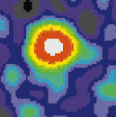
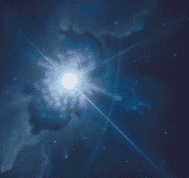

Some call it the main cause of death for life in the Universe. Right or wrong, we should consider ourselves lucky that so far, the most violent natural phenomenon of all has left our planet alone. If it one day does strike, better say goodbye. We don't stand a chance against the infamous `gamma ray bursts' (GRBs).
It's like a lottery, really. Every day, somewhere in the Universe, there's a HUGE explosion. Within seconds, an amount of energy sets free that equals the amount of energy the Sun would emit in its entire lifetime. In fact, some of the blasts are bigger than the energy of all stars combined. No, you just DON'T want to be around when such an explosion occurs.
Strangely, the explosions are usually invisible to the human eye. You would need gamma ray vision to see them. We're talking gamma ray bursts here: cosmic super explosions that throw an awful amount of gamma- and X-radiation into the Galaxy.
|  |
|
|
It was only recently scientists found out what gamma ray bursts really are.
A GRB is what happens when a huge, dying star is eaten up from within by a
black hole. One moment, you'll see a gigantic star, and the next moment,
shhhhlllp!, it is gone, sucked up by a black hole. In those final moments, the black hole spews out a column of
energy -- almost at
light speed! That's why gamma ray bursts are often called 'the birth cries of
black holes'. A less friendly, but more accurate, term would be that GRBs are
belching black holes after they've eaten a star.
Gladly, until now
these super-spectacular things
only happened in distant galaxies, billions of light years away.
But then
again, that could change. Heavy, rotating stars like the ones that
cause gamma ray bursts exist in our part of the Galaxy, too. At least one is
about to go pop: Eta Carinae, a beautiful, but dying star system in the
southern constellation known as the Keyhole. Gladly, the burst won't hit us
directly, since the axis of Eta Carinae is pointed away from us. But any day,
we could stumble upon a dying star that IS aimed at us.
On a list of twenty phenomena that
threaten life on Earth published by the popular science magazine
Discover, gamma bursters come second, right after asteroid
impacts.
As Arthur C. Clarke once pointed out, gamma explosions may be the reason why
we don't notice much of extraterrestrial life forms: long before an alien civilization would have come to the
point of going out in a UFO to explore the galaxy, a gamma ray burst would
have wiped it away.
If a gamma ray burst really does go flash
somewhere in our cosmic neighborhood, the end of times would be really nasty.
It will be like a Hiroshima bomb going off -- on every place on Earth at the
same time!
|  |
At a distance of something like one
thousand light years, the afterglow of the burst would light up as bright as the Sun.
Moments later, our planet will be bathed in a HUGE load of super energetic gamma and
X-rays. A fiery blast will set the atmosphere ablaze. Forests will burn,
rivers and lakes will boil away and the side of the Earth facing the blast
will be sterilized immediately.
And you won't be safe on the other side of the planet.
A massive shockwave, much like the aftershock of a nuclear explosion, will
sweep across the globe. A wall of fire will roast every living thing on Earth
-- well, except a few fish, that is. The Gamma Ray Burst will reset evolution.
Even a blast occurring farther out in the Milky Way won't be good for our
health.
OK, so the burst is too far away to fry us. But still, it will mess up our
atmosphere. The energetic gamma rays will grind up the molecules our
atmosphere is made of into separate molecules of nitrogen and oxygen. These
atoms in turn will mop up the ozone layer, leaving us exposed to the deadly UV
radiation from the Sun.
And if that isn't enough to kill you, there will be the
soot. High up in the atmosphere, the loose atoms will bind up into
nitrogen dioxide, a brown, filthy gas that will blanket the Sun. We'll have a
massive nuclear winter and die a horrible climate
disaster death.
To make
things worse, no
one really knows how big the risks are. On the one hand, gamma ray
bursts that damage our world are likely to happen once every 10 million years
on average. That would mean our planet has survived many, many bursts in the
prehistoric past.
On the other hand, it's hard to predict when the next GRB will hit us. Could
be in million years time. Could be tomorrow.
 |
 |